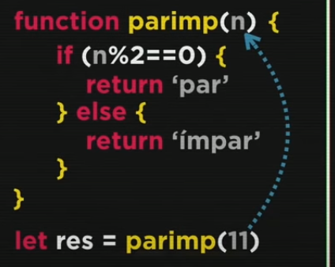

Aula 15
Variáveis Compostas
São os famosos arrays, ou vetores (coleção)
Diferente das variáveis simples, que só podem aramzenara um valor por vez, as compostas conseguem armazenar vários valores em uma mesma estrutura.
As variáveis compostas economizam linhas de código.

Para declarar tais variáveis, usamos o array, formado pelos dados entre colchetes ([]). Cada espaço do array é chamado de elemento, sendo que este é formado pelo espaço da memória, pelo valor que o mesmo armazena e pelo índice. Para separar os elementos, utiliza-se vírgula (,)

Para adicionar valores no array, podemos utilizar o nome da variável, seguida do índice entre colchetes e o sinal de atribuição seguido do valor a ser inserido no índice indicado. Caso queiramos adicionar algum valor à última posição do array, uilizamos o método interno push.

Para saber o comprimento do array, utilizamos o atributo length (que é um atributo pois não utiliza parênteses após o chamamento do comando).

O método sort é utilizado para ordenar os valores do array. Assim, os mesmos ficarão em ordem crescente.
Para arrays, podemos utilizar o código for in para percorre o array

Podemos também buscar valores dentro dos vetores, com o método indexOf(). Esse método retorna a posição do valor passado como parâmetro. Caso o valor passado não esteja no array, o método retorna o valor -1.
Exercício 019Aula 16
Funções em JavaScript
São tarefas rotineiras a serem executadas durante o código. Para não escrever todos os comandos do bloco de código que consiste na função, apenas a declaramos uma vez e fazemos a chamada durante o restante do programa.
Partes da Função
A função é composta pelos seguintes elementos:
- Chamada
- parâmetro
- execução/comandos (ação)
- retorno
Em sua definição técnica:
Como declarar uma função
Exemplo
Caso um parâmetro não seja passado, a função irá retornar um undefined ou um NaN. Para resolver esse problema, basta atribuir um valor default para o parâmetro no parâmetro formal. Assim, caso o parâmetro de chamada não for passado, o parâmetro assumirá o seu valor predefinido.
function soma(n1=0, n2=0){
return n1+n2
}
Podemos também atribuir uma função à uma variável. Nesse caso, o parâmetro deve ser escrito entre parênteses logo após a variável
var s = function(a, b){
return a + b
}
console.log(s(4,9))
//13
Funções Recursivas
São funções que chamam elas mesmas
Exercício 021 Exercício 022 Exercício 023Aula 17
Próximos passos em JavaScript
O que estudar daqui pra frente...
- Functions
- Arrow functions
- Callbacks
- Fnções anônimas
- iifes
- Objetos
- Modularização
- RegEx
- Json
- Ajax
- Node Js
- jQuery
Introdução à objetos
O objeto seria uma evolução de vetores (arrays). Um dos principais objetivos do mesmo é poder personalizar os índices, visto que o array possui índices fixos e imutáveis (0,1,2,3,4,5...)
Para declarar um objeto, utilizamos chaves. Dentro delas, descrevemos o índice do objeto, seguido de dois pontos (:) e por fim o valor deste índice.
Uma questão interessante é que os objetos, além de guardar valores, podem armazenar funcionalidades (métodos).
Desse modo, os atributos/métodos do objeto podem ser acessados por .método
Curso de Javascript